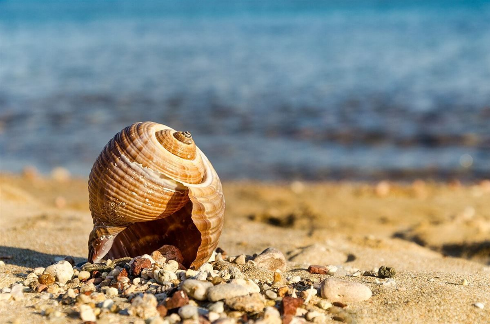
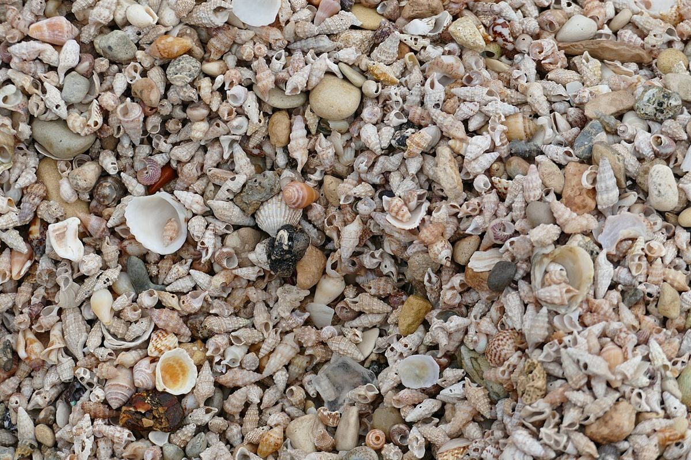

カフェ / 高知県南国市
sumicaすみかという響き
高知県南国市にあるカフェ「sumica」のご案内ページです。営業時間やメニューは準備中。気になったら、まずはInstagramをのぞいてみてください。

制作側の連想
貝殻の引っ越し
制作側は「sumica」から「住処(すみか)」を連想し、ヤドカリが体の成長に合わせて、より大きな貝殻へ住み替えていく様子を思い浮かべました。そこでこのサイトは、5つのページを小さな殻から大きな殻へ並べる作りにしています。お店の理念・由来とは無関係の、制作側の連想です。
殻のサイズ表
S から XXL まで、5つの殻。
写真は南国市の風景やお店ではなく、国外・撮影地不明のフリー素材のイメージです。




ご案内
お店のこと(確認できたものだけ)
| 所在地 | 〒783-0052 高知県南国市左右山137-12 |
|---|---|
| 電話 | 088-855-6147 |
| 営業時間 | 準備中 |
| 定休日 | 準備中 |
| ご予約 | 準備中 |
| 駐車場 | 準備中 |
| SNS | Instagram @kissasumica |